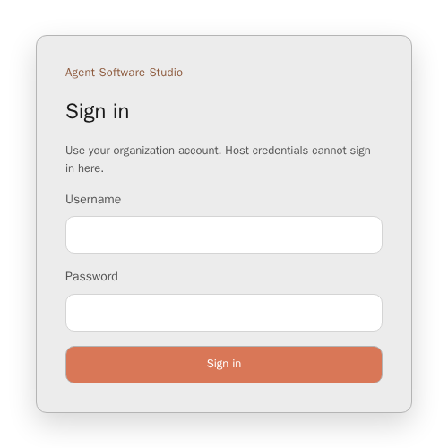
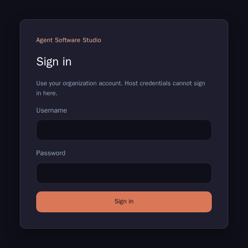
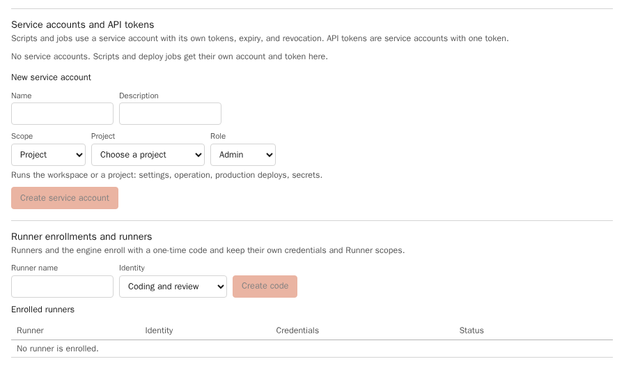
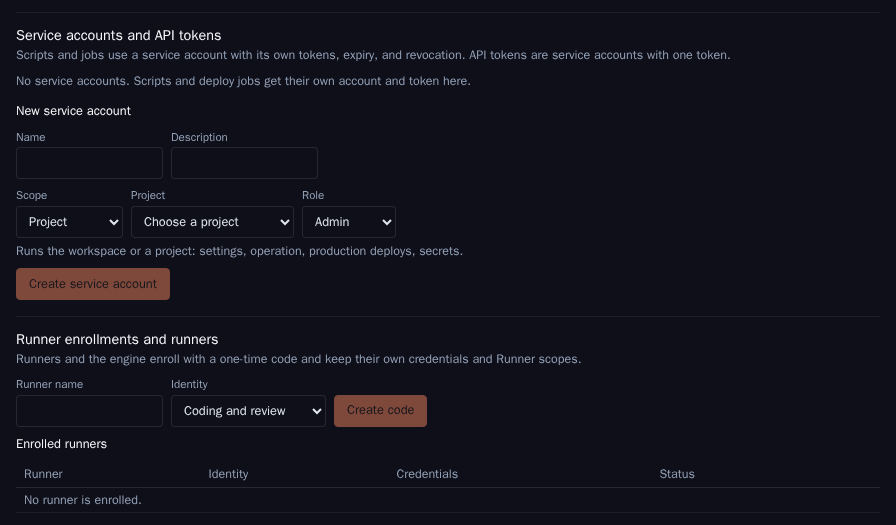
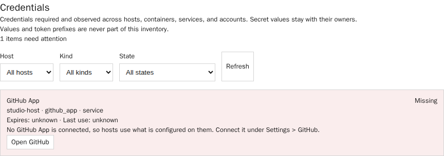
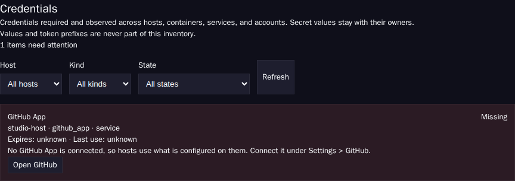

O1 · Owner's account and long-lived keys
Today's model. Fast and complete, but every action is the owner's, no scope or expiry exists, revocation means changing the owner's own keys, and an injected session holds full authority.
Concept Dossier · AGT-3353 · 1 November 2026
Studio is about to run as a public website, and a trusted operator agent can already control the whole system through the owner's account. This Dossier sets the target: five trust zones, the operator agent as a first-class actor with its own identity, tiered authority, owner approval and an audit trail it cannot rewrite, contained coding agents, and an order of work from an owner-only site to outside customers.
On 1 November 2026 the owner asked for a security concept that covers a trusted operator agent which may control the whole system. Studio moves to a public website first; hardening follows the move. This Dossier therefore fixes the order of the work and the target it converges on.
The repository is public. The Dossier describes the target model and classes of gaps. It names no host, address or account, and it does not describe an unfixed weakness at a level that could be followed as instructions. Concrete findings, with the code locations that establish them, are in a private handoff delivered with the task results and kept out of the repository.
Terms used throughout:
This card changes no product code. The work it proposes is cut into implementation slices ordered by stage.
Same-machine execution hosts may reach the Task Server through a loopback listener instead of the public Cloudflare route. In the networked profile the Runner still presents its scoped bearer credential; loopback changes transport only. The listener must remain loopback-only. The local profile's seeded management trust rule is not a Runner authentication mechanism.
The card's description of who can do what was checked against the repository on 1 November 2026. It holds. The table restates it at class level; the right column names the gap class that the target model closes. Controls that already exist and stay are listed below the table, because the starting point is stronger than a password-only site suggests.
| Actor | Authority today | Gap class |
|---|---|---|
| Owner | Signs in with username and password. Login throttling per client, network and username, salted adaptive hashing, host-only secure cookies with idle and absolute expiry, CSRF plus origin checks, password reset revokes sessions. | One factor guards the most privileged account on a public URL. No second factor in the product, no identity-aware access layer in front, no list of one's own sessions and no sign-out of all sessions. |
| Operator agent | Acts through the owner's OS account and SSH keys, including privileged access on execution hosts. Restarts services, edits host configuration, pushes to develop, runs the promotion to main with the owner's Git credential, enrolls hosts, can reach credential files. In the local profile the management plane trusts the seeded loopback client. | No identity in Studio, no scoped credential, no record separate from the owner, no approval step. Authority rests on verbal delegation in chat. Content it reads can try to steer it. |
| Coding and review agents | Run as processes under the host service's OS user. The per-run work container executor exists and is hardened, but its mode defaults to off. The documented accepted risk (25 October 2026) treats everyone who can submit coding work to a shared host as one trust group. | No boundary between a run and the host: the run can read the host service credential, provider logins and repository tokens, and container runtime access on that host is equivalent to root. |
| Service credentials | Runner credentials are hash-only at rest, scoped by route family, revocable and rotatable with overlap. Repository tokens from the GitHub App are short-lived and issued per repository. | Scope is wider than the work: a runner credential is not bound to projects, has no default expiry, reads any card, and can claim a review for any project and then report it. A host receives tokens for every registered repository; write tokens include workflow files. |
| Studio server | One API container holds the GitHub App key, the secret store, accounts, CLI logins and all project data. External secret backends exist as adapters. | One compromise reaches every secret class at once. Signing material is not separated from request handling. |
| Audit | Append-only JSONL files for IAM changes, service-account and API-token calls, secrets, deploys and remote runs; a separate table in the Task Server; in-place records for watcher interventions and operator intents. | Ordinary human browser actions are not recorded. Audit files live on the host they describe, without a hash chain or an off-host copy, so whoever controls that host can rewrite them. |
| Repository and release | Release archives carry checksums and build provenance attestations. Protected-branch movement by a run is detected after the fact. | No enforced repository rules on develop, main or tags from the platform side; workflow actions referenced by tag rather than digest; tags unsigned. |
| Review and gate hosts, engine, hosted apps | Described in Security overview and the deploy and run-target code. The gate receives its source as a bundle and needs no repository token. | Same host-level classes as coding hosts; covered by the containment and zone rules below. |
Each actor is listed with what must never be possible and what is accepted. "Accepted" always names the stage after which the acceptance ends (see Stages).
| Actor | Must never be possible | Accepted |
|---|---|---|
| Anonymous internet | Read or change any project data; reach the API, hubs or host services except sign-in and health; learn whether an account exists; reach the origin around the edge. | Brute-force noise absorbed by edge and API throttles. Availability attacks beyond the CDN's protection. |
| Signed-in Viewer or Product | Mutate outside their role; read another project; see secret values, raw logs, hosts or credentials. | Reading everything in the granted scope, including secret metadata for Viewers. |
| Signed-in Developer or Admin | Act outside bound projects; administer access; approve their own production release; read secret values. | Starting agents that can change the project's checkout within their grant. |
| Owner account, taken over | Takeover with a password alone; silent takeover (no alert, no session visible); removal of the audit trail. | A takeover that defeats both factors is damage-limited by the off-host audit and the break-glass review, not prevented. |
| Coding agent, honest | Read another project's checkout, host credentials, provider logins of other runs, or the runtime socket; publish without the gate; approve its own delivery. | Full authority over its own attempt's working tree within its egress allowlist. Until Stage 2: shared host for one trust group. |
| Coding or review agent, prompt-injected | Everything above, plus: exfiltrate data outside the allowlist; obtain a token that outlives the lease; mark a review passed for a delivery it did not review. | A wrong change in its own attempt, caught by review and gate. |
| Operator agent, honest | Any action without an attributed identity; a high-risk action without the owner's approval; holding long-lived keys or secret values. | Observation of the whole system; routine operations within a standing grant. |
| Operator agent, prompt-injected or hijacked | Escalate beyond its grants; obtain an approval by wording; rewrite or suppress audit; survive the kill switch; reach credential files or the owner's keys. | Routine operations within its current grant until the owner reacts. Grants are scoped and expire so that this window stays small. |
| Execution host, compromised | Reach the control plane beyond the runner protocol; obtain tokens for other hosts, projects or repositories; publish to protected branches; read secrets of other hosts. | Loss of the runs currently on that host and of their attempt tokens until expiry. |
| Control plane host, compromised | Rewrite the audit history already forwarded off-host; sign a release without the separate signing key (from Stage 3). | Until the signer split (Stage 2): disclosure of root keys and data. The incident runbook rotates everything. |
| Dependency or CI, compromised | A release whose provenance cannot be checked; a workflow change merged without review; an unpinned action or image pulled at run time. | Vulnerable versions inside the patch window, reported by Quality Studio sensors. |
Five zones. A zone is a set of components that may trust each other's requests without further proof. Every crossing carries an identity that the receiving zone verifies, and every crossing that changes state is recorded by the audit writer in the control plane.
| Zone | Holds | Crosses a boundary with | May share |
|---|---|---|---|
| Z1 Owner | Password and second factor, approval and kill-switch authority, the sealed break-glass credential. | Browser session over HTTPS through the edge. | A machine with Z2, never an OS user. |
| Z2 Operator agent | An operator session token (hours) and, during the transition, a host certificate (minutes). No long-lived key, no secret value, no owner key or SSH agent. | Operator session token to the Studio API; certificate to a host only through the policy step. | The owner's machine under its own OS user or a container. |
| Z3 Control plane | Accounts, sessions, grants, approvals, secret store, GitHub App key, audit writer, project data, Operations Server. | Answers Z1 and Z2; issues leases, attempt tokens and typed operations to Z4; deploys releases to Z5; forwards audit off-host. | Separate containers per role on one host until Stage 2, then its own host (D6). |
| Z4 Work plane | Host enrollment credential (host agent only), attempt tokens inside the attempt's container, the attempt's checkout. | Outbound claim, heartbeat, logs and completion to Z3; repository and provider traffic through the egress allowlist. | A host with Z3 only until Stage 2 and only with separate OS users and no runtime access for agents. |
| Z5 Hosted apps | Running releases and their environment secrets. | Receives releases and secrets from Z3; no route back into Z3 or the secret store. | A host with Z4 only with separate users, networks and the run-zone deny rules. |
Outside every zone sit the internet, GitHub, the model providers and a write-once audit sink. No zone holds a credential that can delete or change entries in that sink.
The operator agent stays useful: it observes everything, does routine work without asking, and prepares high-risk work for a fast owner decision. What changes is that every one of its actions passes through Studio under its own name, within a recorded grant, and leaves an entry it cannot remove.
Studio gets a principal kind operator-agent, built on the existing service-account model (own bearer tokens, expiry, last use, revocation, non-human actor). Each interactive session is a child of that principal with its own session id. Every request, audit entry, timeline event and Git commit trailer carries operator-agent:<id>/session:<sid> and delegatedBy: human:<owner>. The owner's account never appears as the actor of something the agent did. The in-product AI Operator keeps its own actor name; both appear in one activity view.
main runs as a Studio operation that checks gate evidence, not as a script with the owner's credential (D2, D3).| Tier | Examples | Condition | Record |
|---|---|---|---|
| T0 Observe | Read board, cards, runs, logs, metrics, host status, audit, credential metadata. | Always allowed to an active operator session. | Session-level access log. |
| T1 Routine | Requeue, steer, restart an allowlisted service, drain or resume a host, re-run a gate, deploy a gate-verified commit to stage, promote a gate-verified commit (D2). | A standing grant that covers the operation, scope and rate. | Audit entry with grant id. |
| T2 High risk | Read or change secrets, firewall and exposure, delete data, force push or history rewrite, any gate bypass, rotate keys, enroll or remove hosts, change access or grants, change the operator agent's own limits. | Owner approval in Studio for this exact request. | Audit entry with approval id and parameter digest. |
| T3 Break-glass | Interactive privileged shell during an outage. | Opened by the owner, not requested by wording; time-boxed. | Separate stream, review card afterwards. |
An operation not in the catalogue is refused. Adding an operation to the catalogue or moving it between tiers is itself T2.
A standing grant replaces "you may restart services whenever needed" in chat history or agent memory. It is a record in the identity store with: id, principal, tier (T1 only), operation set, scope (workspace, project, environment or host), constraints (rate per hour, time window), issued by, issued at, expires at (default 7 days, at most 30), revoked at and a reason. Only the owner creates, renews or revokes a grant, in Studio, with step-up. Grant changes go to the IAM audit. An agent's memory file or a chat message never creates authority; the policy step reads only grant records.
A T2 request creates an approval request instead of an effect. It shows the exact operation and parameters, the parameter digest, the target, the session, the requesting instruction source (owner chat, card, repository file, web page, log) and the agent's stated reason. The owner approves or rejects in Studio with step-up. An approval is single-use, bound to the digest, and expires after 15 minutes. Execution re-checks the digest and records the result against the approval. The existing decision-card record is the model for the fields, but approval actors come from the authenticated session, never from a client-supplied header.
The audit writer runs in the control plane, not on the host the agent acts on. Each entry carries actor, session, grant or approval id, operation, target, parameter digest, outcome and the hash of the previous entry. Entries are forwarded within 60 seconds to a write-once sink outside every zone; the operator agent and the Studio host hold append-only credentials there at most, and no zone can delete. A scheduled verification compares the local chain with the sink and raises an acute alert on a gap or mismatch. Host-side, the operations agent journals every executed command with the operation id, so a host action without a matching central entry is visible.
For a real emergency, for example Studio itself down: the owner opens a break-glass window with a sealed credential that is kept offline and the second factor. The window lasts at most 2 hours, opens an interactive privileged path for the named sessions, writes to a separate audit stream, alerts on open, and creates a review card when it closes. If the control plane is down, the host-side journal and the sink receive the entries; the review reconciles them after recovery.
One owner action in Studio, plus an out-of-band command on the control plane host for when the UI is unreachable, ends all operator access at once: the operator principal is disabled, every session token and grant is revoked, certificate issuance stops and the host revocation list is pushed, pending approvals are cancelled, and operations agents terminate running operator operations. Target: every operator call refused within 60 seconds, verified by a monthly drill. A per-session kill exists for one runaway session.
Several sessions run under one principal, each with its own session id and an optional subset of the principal's grants. Effects on shared resources use the existing fences and leases, so two sessions cannot apply conflicting host or card operations. The activity view groups by session. Approvals name the session that asked. The kill switch acts on one session or all.
main, develop and release tags are protected by repository rules: no force push, no deletion, updates only by the platform's identity after gate evidence. The ruleset's bypass list contains no agent identity.Settings > Credentials is the inventory surface: it lists metadata only, never values (see Evidence). The Credentials and logins Dossier owns renewal, probes and the typed runbooks; this section sets placement and the takeover order on top of it.
| Class | Target holder | Lifetime | Rotation |
|---|---|---|---|
| Owner password and second factor | Owner only; factor on a separate device | Password without schedule; factor until replaced | On suspicion; recovery codes sealed offline |
| Break-glass credential | Sealed offline, used with the second factor | Single use per window | After every use |
| Operator session token and host certificate | Operator agent's own OS user | 8 hours; 60 minutes | Never rotated, re-issued |
| Service accounts and API tokens | The script or job that uses them | Default 90 days, at most one year | Overlap rotation, revoke old |
| Host enrollment credential | Host agent's service user only | Default 30 days (D7) | Overlap rotation, proven daemon, revoke old |
| Attempt repository and provider tokens | The attempt's container, tmpfs | Lease, at most one hour | Re-minted per attempt |
| Provider root logins | Credential broker on the host, outside run containers | Provider-defined | Guided renewal (Credentials and logins) |
| GitHub App private key and client secret | External secret backend or signer, not the API container's disk (from Stage 2) | Until rotated | Yearly and after any control-plane incident |
| Secret store key-encryption key | Outside the data volume: KMS, external backend or a host secret readable only at start | Until rotated | Re-wrap on rotation |
| App secrets per environment | Secret store; delivered to hosted apps only | App-defined | Studio rotation with versions |
| Edge certificates and origin authentication | Edge only; monitoring copy without key | Certificate validity | Before expiry, alerted at 30 and 14 days |
| Administration SSH keys | Replaced by certificates from the Studio-issued CA; long-lived keys only in break-glass custody | Minutes | CA key rotation yearly |
| Backup encryption key | Owner custody, separate from the backups | Until rotated | Re-encrypt on rotation; restore test after |
Backups of workspace, access state, secret store and audit are encrypted with a key that is not stored next to them, kept in a second location, and restored on a schedule into a scratch installation; the restore test's result is a monitored signal. The audit sink is not part of the same backup chain, so a restore cannot overwrite it.
The runbook acts in five steps for every case: contain, revoke, rotate, verify, review. The order of rotation follows what the attacker could have held.
| Case | Contain | Rotate, in order |
|---|---|---|
| Operator agent session or its machine | Kill switch | Operator principal and grants; host certificates (CA revocation list); any secret an approval exposed during the window; then review the audit window against the sink. |
| Execution host | Revoke the host credential, drain, isolate network | Host credential; attempt tokens (expire on their own, revoke now); provider logins held by that host's broker; repository access for every repository the host could reach; rebuild the host from image. |
| Control plane host | Edge to maintenance mode; kill switch; revoke all sessions | GitHub App key and client secret; key-encryption key and every secret value; all service-account, API and runner credentials; session signing state; edge origin authentication; then rebuild and restore from a backup older than the first suspicious sink entry. |
| Owner account | Revoke all owner sessions from break-glass; disable operator agent | Owner password and factor; recovery codes; every grant the owner issued in the window; review every approval in the window. |
Each stage has an entry condition. Work listed for a stage must be done before that stage starts; work from a later stage may start earlier.
| Stage | Must hold | Slices |
|---|---|---|
| 0 · Owner only, behind an access layer | Operator agent has its own identity and audit trail; kill switch works; access layer with second factor in front of the site; deployment baseline and encrypted, tested backups. | SM-1, SM-2, SM-3 |
| 1 · Public login | In-product second factor and session management; operator tiers, standing grants and owner approval; host actions without the owner's keys; break-glass; runner credentials bound and expiring; repository rules and pinned actions; continuous checks. | SM-4 to SM-10 |
| 2 · A second user | Per-attempt containers by default with no shared OS user and no runtime access; attempt-bound tokens without workflow permission by default; control plane on its own host; root keys outside the API container. | SM-11, SM-12 |
| 3 · Outside customers | Separate work hosts per customer, signed and verified releases, external penetration test, incident response commitment. | SM-13 |
Today's model. Fast and complete, but every action is the owner's, no scope or expiry exists, revocation means changing the owner's own keys, and an injected session holds full authority.
Separates the agent from the owner's keys and limits commands on hosts. Studio still cannot see or approve anything, the key lives indefinitely, and the allowlist drifts host by host.
Studio issues the operator session and, after the policy step, an SSH certificate valid for minutes for an unprivileged account with a command allowlist. Attribution, expiry, tiers and the kill switch work. A shell remains, so the allowlist must be tight and the host journal must be trusted.
No shell. Every host effect is a catalogued operation executed by the host's operations agent, every repository effect is a card or Studio operation. Strongest attribution and the smallest injection blast radius; needs operations for everything routine and a break-glass path for the rest.
A third-party privileged-access product records shells and issues certificates. Mature session recording, but a second identity system to operate, with no knowledge of cards, gates or grants.
| Criterion | O1 | O2 | O3 | O4 | O5 |
|---|---|---|---|---|---|
| Actions attributed to the agent | No | On host only | Yes | Yes | Yes, outside Studio |
| Scope and expiry | No | Commands, no expiry | Yes | Yes | Yes |
| Owner approval per action | No | No | Yes | Yes | Partial |
| Kill switch in one step | No | Per host | Yes | Yes | Yes |
| Blast radius of an injected session | Everything | Allowlist on every host | Current grant plus shell allowlist | Current grant | Recorded shell |
| Usable in an outage | Yes | Yes | Needs control plane | Needs control plane | Needs broker |
| Effort | None | Low | Medium | Medium to high | Medium plus operation |
Today's default: control plane and agents on one host, agents as processes under the host service user. Cheapest; a run reaches everything on the host.
Control plane in its own containers; host agent under its own service user without runtime group; each attempt in a hardened container with its own UID and egress allowlist. Closes the run-to-host path at low cost. A kernel or runtime escape still reaches the control plane.
H2 plus a machine boundary between control and work planes. An escape from a run reaches only other runs on that work host. One more machine to run.
H3 with a microVM or user-space kernel per attempt. Strongest isolation for code from outside customers; startup cost, nested-virtualization needs and image tooling.
| Criterion | H1 | H2 | H3 | H4 |
|---|---|---|---|---|
| Run reads host credentials | Yes | No | No | No |
| Runtime escape reaches control plane | Yes | Yes | No | No |
| Runtime escape reaches other runs | Yes | Yes | On that host | Unlikely |
| Fits two or more trust groups | No | One group plus staff | Yes | Yes, including outside customers |
| Cost | None | Low; executor exists | One more machine | High |
Today. Simple, but the host that is described can rewrite the record.
Studio keeps the chain for queries and forwards each entry to a sink no zone can rewrite. Tampering becomes detectable and the history survives a control-plane takeover.
Strong retention, but queries for the activity view depend on an outside service and its availability.
Adopt O4 as the operator credential target with O3 as the transition and the break-glass path, on top of the existing service-account model. Keep the agent's authority in recorded, expiring grants; route high-risk actions to an owner approval with step-up; record everything in an A2 hash-chained audit with an off-host sink; and make the kill switch a tested one-step action.
Separate hosts as H2 now, because the hardened work-container executor already exists and closes the run-to-host path at low cost, move to H3 before a second user, and offer H4 for work from outside customers.
Order the work by stage: SM-1 (operator identity and audit trail), SM-2 (kill switch and sessions) and SM-3 (access layer and baseline) before the site goes public behind its access layer; tiers, approvals, host operations, second factor, bound runner credentials and repository rules before the login is public; containment and key placement before a second user.
The most important reason: today the system's most powerful actor is indistinguishable from the owner. Until it has its own identity and record, no later control can be audited, revoked or reviewed, which is why the identity and the audit trail come first.
Evidence is classified as observed (read in the repository or captured from the running product on 1 November 2026), inferred, or proposed. Concrete gap locations are in the private handoff and are not repeated here.

Password is the only factor
networked-monolith profile; cropped to the sign-in card.Dark: captured , same stack and crop.
Two non-human kinds, none for an operator agent

Metadata only, no values
The capture stack serves the frontend over a loopback HTTP proxy, so its live-update connection stayed offline and the full page showed a connection banner. The crops exclude that banner; it is a property of the test harness and does not affect the facts shown.
deploy/zones/.
ObservedOperations ServerBearer principals, per-operation scopes, idempotency, two typed operations; no human approval step; attempt state rewritten in place; deployed only in a rehearsal stack. Boundary decided in the Operations Server Dossier (AGT-W49).
ObservedPromotion to mainAn operator command run with the operator checkout's Git credential; no force push and no gate bypass in the execute path; no approval enforced in the product.
ObservedRelease workflowChecksums and build provenance attestations exist; most actions are referenced by tag, not digest; tags are not signed.
ObservedDecision cardsStructured options, decider, choice, actor and time: the model for approval records, with the caveat that the actor must come from an authenticated session.
InferredOperator agent authorityFrom the card and the code paths above: the agent's power equals the owner's OS account plus everything that account's keys reach. Studio cannot distinguish it, so no later control can be attributed or revoked until it has its own identity.
InferredCheapest large reductionTurning on the existing work-container executor and removing runtime access from the agent user closes the run-to-host path without new architecture.
ProposedTarget modelZones, tiers, grants, approvals, A2 audit, kill switch, staged slices: proposals of this Dossier, not current behavior.
ObservedRelated DossiersCredentials and logins (AGT-W67), Dynamic placement (AGT-W80), Integrated platform (AGT-W81, zones and secrets), Observation (AGT-W58, AI Operator autonomy classes). This Dossier aligns with their recommendations and does not reopen them.
Each block recommends a working option. Implementation slices use the recommendation unless a recorded operator decision selects another option.
Options: O1 owner's account and keys; O2 dedicated OS user with long-lived key and sudo allowlist; O3 Studio identity with short-lived certificates; O4 Studio identity with typed operations only; O5 external access broker. Recommend O4 as target, O3 as transition and break-glass path. O1 and O2 cannot attribute, approve or revoke in one step; O5 adds a second identity system that knows nothing of cards and gates.
Options: A routine (T1) when the commit carries full gate evidence, high risk otherwise; B always high risk; C routine without conditions. Recommend A. The gate already proves the tree; an approval for every green promotion trains the owner to click through. Any promotion without complete gate evidence is a gate bypass and therefore T2.
Options: A no direct push to protected branches; changes go through cards and the gate; direct push only in break-glass; B direct push to develop under a standing grant; C unchanged. Recommend A. It keeps one path to protected branches, which repository rules can then enforce for every identity.
Options: A1 local append-only files; A2 local hash chain plus off-host write-once sink; A3 external log service only. Recommend A2. It keeps queries local and makes the history survive a takeover of the control plane.
Options: A identity-aware access layer only; B in-product WebAuthn and TOTP only; C access layer at Stage 0, in-product factor before public login, both kept. Recommend C. The access layer is available now without code; the in-product factor is needed for step-up approvals and for users the access layer does not know.
Options: H1 shared host and user; H2 one host, separate users, per-attempt containers; H3 control plane on its own host; H4 per-attempt sandbox VM. Recommend H2 through Stage 1, H3 before Stage 2, H4 offered for outside customers at Stage 3. This revisits the co-location chosen in application lifecycle D15 only from Stage 2 on, when a second trust group arrives.
Options: A operator session 8 hours, host certificate 60 minutes, standing grant default 7 days and at most 30, approval 15 minutes, host enrollment credential default 30 days with overlap rotation; B longer lifetimes with manual review; C shorter, per-action tokens only. Recommend A. Short enough that a stolen token expires within a working day, long enough that routine work does not stall.
Options: A in Studio with step-up, optional push notification that links to it; B chat reply to the agent; C email link. Recommend A. A chat reply is exactly the channel an injected agent can fake or misread; an approval must be made where the agent cannot write.
Options: A sealed offline credential plus second factor, 2-hour window, automatic review card; B a standing admin key on the owner's machine; C no break-glass. Recommend A. B recreates today's standing authority; C leaves an outage of the control plane without a recorded path.
Options: A withheld by default, granted per attempt only when the card is marked as changing CI, with mandatory human review; B always granted (today); C never granted to agents. Recommend A. Workflow files run with repository secrets; changing them is a privilege escalation path that should be deliberate.
Options: A own OS user or container on the owner's machine, without the owner's SSH agent, keys or credential files; B the owner's account with a restricted shell profile; C a separate operations machine. Recommend A. It removes the owner's keys from the agent's reach at no infrastructure cost; C remains open if several people operate.
Thirteen bounded slices are defined in workbench.json, ordered by stage. Each has a measurable acceptance target. This Dossier changes no product code.
| Slice | Stage | Acceptance target |
|---|---|---|
| SM-1 Operator agent identity and audit trail | 0 | 100% of operator requests in a scripted session are attributed to the operator agent, none to the owner; a changed or deleted audit entry fails chain verification; entries reach the sink within 60 s. |
| SM-2 Kill switch and operator sessions | 0 | After the kill switch every operator call is refused within 60 s; a per-session kill leaves other sessions working; drill recorded. |
| SM-3 Access layer and deployment baseline | 0 | Site unreachable without the access layer's second factor; baseline check script passes; encrypted backup restored into a scratch installation. |
| SM-4 Operation catalogue, tiers and standing grants | 1 | Every catalogued operation has a tier; uncovered T1 and every T2 request is refused with a typed reason; grants expire and revoke in tests. |
| SM-5 Owner approval with step-up | 1 | A T2 request runs only after a digest-bound, single-use approval made with step-up; replay, changed parameters and expiry are refused. |
| SM-6 Host operations without the owner's keys | 1 | Routine host work runs as typed operations; remaining shell access uses certificates of at most 60 minutes; no long-lived operator key on any host. |
| SM-7 Break-glass window | 1 | Window opens only with sealed credential and second factor, closes after at most 2 hours, writes a separate stream and creates a review card. |
| SM-8 Second factor and session management | 1 | Owner and Admin cannot sign in or step up without WebAuthn or TOTP; users list and revoke their sessions; new-session notice sent. |
| SM-9 Bound and expiring runner credentials | 1 | A runner cannot read, claim or report work outside its projects and role; new credentials expire after 30 days by default. |
| SM-10 Repository rules, pinned actions and continuous checks | 1 | Protected references refuse force push and non-platform updates; all actions pinned by digest; Quality Studio reports the posture on every release. |
| SM-11 Per-attempt containment by default | 2 | A probe run cannot read host credentials, reach the runtime socket or a non-allowlisted address, or use a token after its lease. |
| SM-12 Control plane separation and key placement | 2 | Control plane on its own host; GitHub App key and key-encryption key absent from the API data volume; takeover runbook rehearsed. |
| SM-13 Customer isolation and verified releases | 3 | Each customer's work runs on its own host pool; deploys refuse an unsigned or unprovenanced release; external penetration test findings closed or accepted. |
/tmp is the disk-backed api-tmp data directory instead of an unbounded tmpfs, and the baseline check refuses a memory-backed API /tmp.